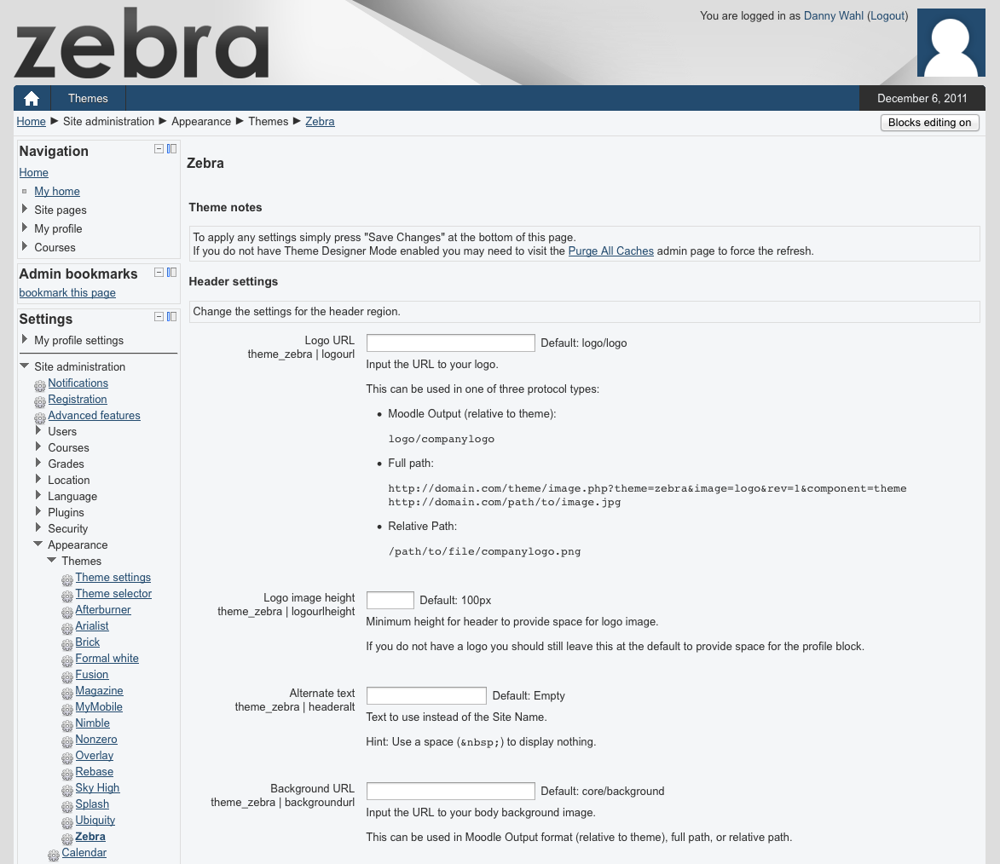
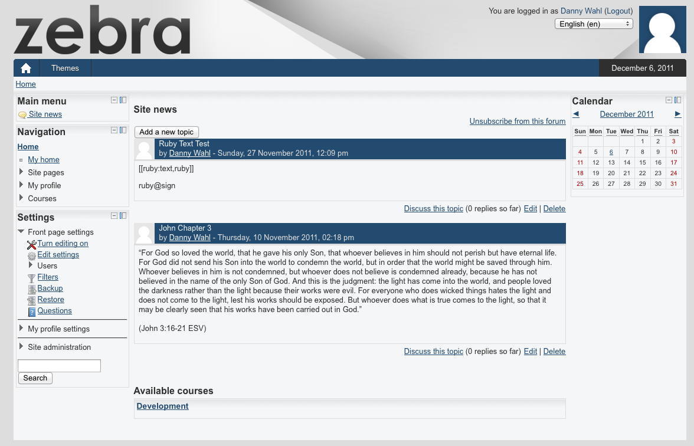
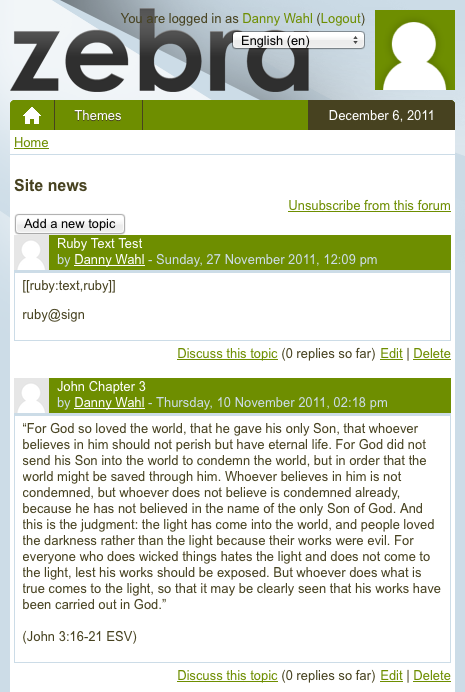
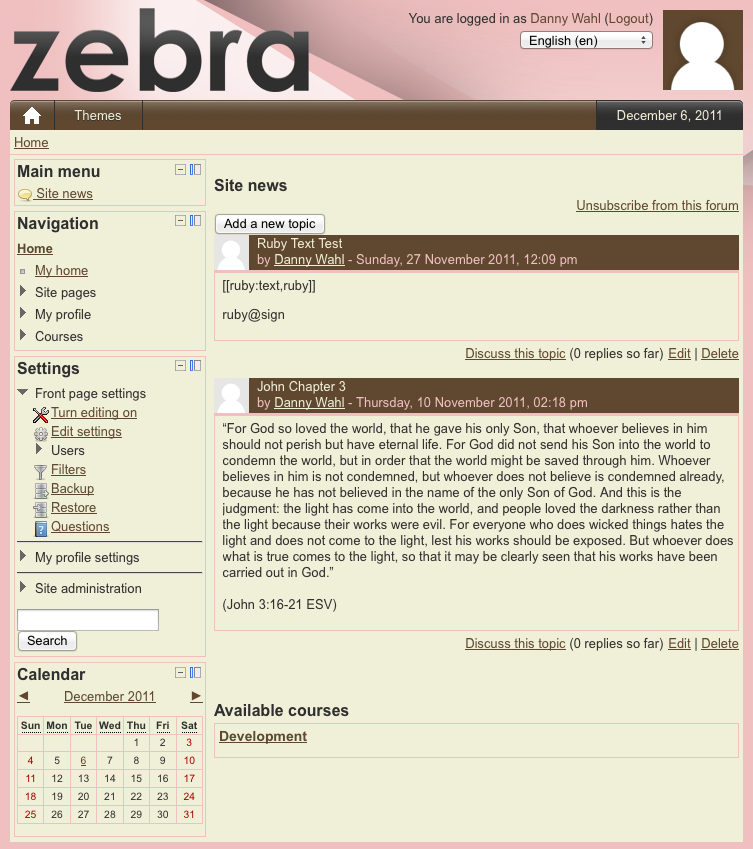
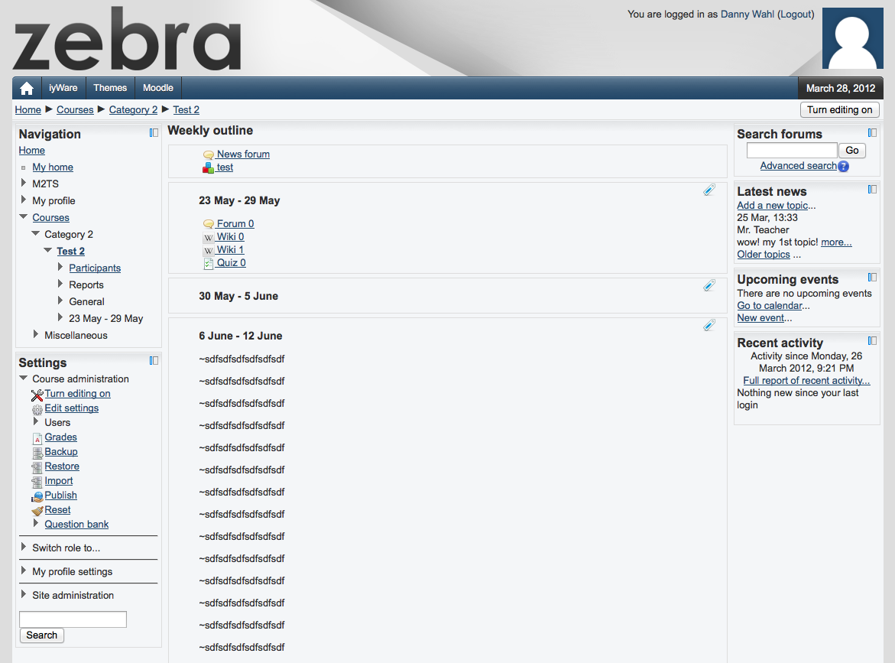

Zebra 2
 Danny Wahl
•
•
Danny Wahl
•
•
Zebra 2 takes the Moodle 2 theme engine to its maximum potential: A settings page with over 30 customizations, responsive layout, and thorough documentation. If you thought customizing your theme was easy with the original Zebra, you’re going to love using Zebra 2.
Features
- Over 30 custom options on a dedicated settings page
- Customize things like colors, logos, and media queries
- Dead simple options like “light”, “dark”, and “none” for CSS3 gradients
- Zebra 2 uses a custom-built page layout with a responsive design
- Media queries serve a 1, 2, or 3 column layout at user definable widths
- Zebra 2 uses progressive enhancement, so users with older browsers aren’t left behind
- Built on the H5BP “Mobile first” design principles
- Valid XHTML 1.0 means that Zebra works seamlessly with Moodle
- Vendor prefixes make sure that Zebra displays properly for any user
- Google Chrome Frame optional to help out users who can’t help themselves
- Respond.js option brings media query functionality to Internet Explorer users
Gallery






Download
This theme is available for download from the Moodle Plugins Directory or github.
Documentation & Support
Support for this theme is provided at the Moodle.org forums.